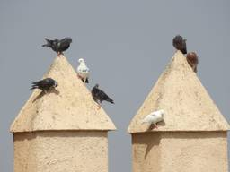
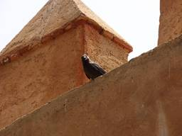
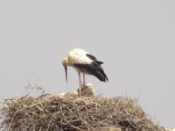
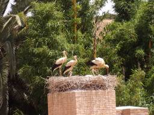

<!doctype html><html lang="en"><title>Morocco 2025</title><link rel="icon" type="image/x-icon" href="https://i.postimg.cc/gJLVdqQn/birds.gif"><meta name="viewport" content="width=device-width,initial-scale=1"><meta name="description" content="These are all the photos I've taken of birds in Morocco. Scroll down for the most recent bird pics!

"><link href="../gallery.css?v=1758752703" rel="stylesheet" type="text/css" media="all"><header><h1> Morocco 2025</h1><p>These are all the photos I've taken of birds in Morocco. Scroll down for the most recent bird pics!</p><a href="../index.html">&#8592; back to the index!</a></header><section><nav class="page-links"></nav><section id="photos"><figure><a href="images/100_0167.JPG" target="_blank"><span class="photo-filename">100_0167.JPG</span></a><figcaption class="photo-info">(7/2/2025) Rock Doves</figcaption></figure><figure><a href="images/100_0187.JPG" target="_blank"><span class="photo-filename">100_0187.JPG</span></a><figcaption class="photo-info">(7/3/2025) Eurasian Jackdaw</figcaption></figure><figure><a href="images/100_0223.JPG" target="_blank"><span class="photo-filename">100_0223.JPG</span></a><figcaption class="photo-info">(7/3/2025) Stork</figcaption></figure><figure><a href="images/100_0232.JPG" target="_blank"><span class="photo-filename">100_0232.JPG</span></a><figcaption class="photo-info">(7/3/2025) More Storks</figcaption></figure></section><nav class="page-links"></nav></section><footer>Made with <a href="https://melonking.net/melon?z=/free/software/gallery-maker" target="_blank">Melon's Gallery v0.0.2</a> - Updated: Sep 24, 2025</footer><audio autoplay loop></audio><script src="../gallery.js?v=1758752703"></script>